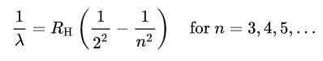
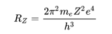

Niels Henrik David Bohr (7 Ekim 1885, Kopenhag –18 Kasım 1962, Kopenhag), Nobel Ödülü sahibi Yahudi kökenli Danimarkalı fizikçi.
Niels Bohr
| Niels Bohr | |
|---|---|

|
|
| Doğum | 9 Ekim 1885 Kopenhag Danimarka |
| Ölüm | 18 Kasım 1962 (77 yaşında) |
| Milliyet | Danimarka Yahudisi |
| Mezun olduğu okul(lar) | Kopenhag Üniversitesi |
| Ödüller | 1922 Nobel Fizik Ödülü |
| Dalı | Fizikçi Matematikçi |
Hayatı ve çalışmaları
Kuantum kuramının atom yapısının belirlenmesinde ilk kez kendi
adıyla anılan atom modelini oluşturdu. Kuantum fiziğinin
gelişmesinde 50 yıla yakın bir süre öncü rol oynadı. Ayrıca atom
çekirdeğinin "sıvı damlacığı modeli"ni geliştirdi.
Söylentiye göre, Danimarka halkının övünç duyduğu dört şey vardır:
Gemi endüstrisi, süt ürünleri, peri masalları yazarı ve fizik
bilgini Niels Bohr. Bohr, bilgin kişiliği ve insancıl
davranışlarıyla, büyük hayaller peşinde koşan gençlere örnek ve esin
kaynağı olan bir öncüydü. O, ne Rutherford gibi dış görünümüyle
ürkütücü ne de Einstein gibi "arabaya tek başına koşulan at" idi.
Daha önce Rutherford'un olağanüstü yeteneğini fark etmiş olan
Thomson, nedense Danimarkalı gence sıradan biri gözüyle bakıyordu.
Tartışmalı bir toplantıda Bohr'un ileri sürdüğü bir çözümü
irdelemeden yanlış diye geri çevirir, daha sonra aynı çözümü kendisi
dile getirir. Bu olayı içine sindiremeyen Bohr yeni arayışlar içine
girer.
Bu sırada bilim dünyasının parlayan yıldızı Rutherford'tur.
Katıldığı bir konferansında Rutherford'un coşkusuyla büyülenen Bohr,
Cavendish'i bırakır, Manchester'de onun ekibine katılır. Rutherford
deneyciydi, Bohr ise kuramsal araştırmaya yönelikti. Ama iki bilim
adamı arasındaki ilişki ömür boyu süren bir dostluğa dönüştü. Öyle
ki, Bohr oğluna hocasının adını (Ernest) verdi. Fakat bursunun
tükenmesi nedeniyle Manchester'de yalnızca altı ay kalabildi.
Bohr oluşturduğu atomun kuantum kuramını yayımlamadan önce
Rutherford'un incelemesine sunmuştu. Rutherford her şeyde basitliği
arayan titiz bir kişiydi. Bohr'un yazısı karmaşık, uzun ve gereksiz
yinelemelerle doluydu. Rutherford düzeltilmesini gerekli gördüğü
noktalara değindi.
Bohr'un kuramı 1913'te İngiltere'de yayımlanır. Ne var ki, bilim
adamlarının büyük bir bölümünün tepkisi olumsuzdur. Onlara göre
ortaya konan, bir kuram olmaktan çok rakamlarla oluşturulmuş bir
düzenlemeydi. Oysa, başta Einstein olmak üzere kimi bilim adamları,
çalışmanın büyük bir buluş olduğunu fark etmişlerdi. Kuramın,
spektroskopi biliminin atomik temelini kurduğu çok geçmeden
anlaşılır. Bir yandan da kuramı doğrulayan deneysel kanıtlar
birikmeye başlar.
Kopenhag Teorik Fizik Enstitüsü başkanlığına getirilen Bohr, 1922'de
Nobel Ödülü'nü alır. Artık kısaca "Bohr Enstitüsü" diye anılmaya
başlayan enstitüye dünyanın pek çok ülkesinden genç fizikçilerin
akını başlar. Gelenler arasında Heisenberg, Pauli, Gamow, Landau
gibi sonradan ün kazanan genç araştırmacılar da vardır. Kısa sürede
dünyanın en canlı bilim merkezine dönüşen Enstitü bir grup üstün
yetenekli genç için bulunmaz bir eğitim ortamı olmuştu.
Bohr çalışma yaşamında sergilediği istenç gücünün yanı sıra neşe ve
mizahıyla gönülleri fethetmesini de biliyordu. Bir teori üzerine
tartışırken, sözlerini şöyle bağlamıştı: "Bu teorinin çılgınca bir
şey olduğunu biliyoruz. Ama ayrıldığımız nokta, teorinin, doğru
olması için yeterince çılgınca olup olmadığıdır."
İlk yılları
Bohr, Danimarka'nın Kopenhag şehrinde 7 Ekim 1885'te üç çocuklu bir Yahudi[1] ailenin ikincisi olarak doğdu. Kopenhag Üniversitesi'nde fizyoloji profesörü ve zengin bir Yahudi olan Ellen Adler[1] Bohr bankacılık ve parlamenter çevrelerde öne çıkan birisiydi. Ablası Jenny ve küçük bir erkek kardeşi Harald vardı. Jenny bir öğretmen oldu, Harald ise Londra'daki 1908 Yaz Olimpiyatları'nda Danimarka milli takımı için oynayan bir futbolcu ve ek olarak matematikçi oldu. Niels da tutkulu bir futbolcuydu ve iki kardeş Kopenhag merkezli Akademisk Boldklub (Akademik Futbol Kulübü) için Niels ile kaleci olarak birkaç maç oynadı. Son önemli çalışmasını, 1939'da yaptı. Yeni keşfedilmiş olan çekirdek bölünmesinin neden bazı çekirdeklerde olup diğerlerinde olmadığını açıklamak için, bir büyük çekirdek ile bir sıvı damlası arasındaki benzerliği kullanmıştı. II. Dünya Savaşı sırasında Bohr, ilk olarak Alman atom projesinde, daha sonra Almanlar tarafından tutuklanacağını Eylül 1943'teki bir mektupla öğrenince New Mexico'daki Los Alamos'ta (ABD) atom bombasının geliştirilmesine katkıda bulundu. Savaştan sonra Kopenhag'a döndü ve burada 1962'de öldü.
Fizik
Eylül 1911'de, Carlsberg Vakfı'ndan bir bursla desteklenen Bohr,
İngiltere'ye gitti. O zamanlar, atomların ve moleküllerin yapısı
üzerindeki teorik çalışmaların çoğunun yapıldığı yer burasıydı.
Cavendish Laboratuvarı ve Trinity College, Cambridge'den J. J.
Thomson ile tanıştı. James Jeans ve Joseph Larmor tarafından verilen
elektromanyetizma üzerine derslere katıldı ve katot ışınları
üzerinde bazı araştırmalar yaptı, ancak Thomson'ı etkilemede
başarısız oldu. Avustralyalı William Lawrence Bragg ve 1911 küçük
merkezi çekirdek Rutherford atom modeli Thomson'ın 1904 erikli
puding modeline meydan okuyan Yeni Zelandalı Ernest Rutherford gibi
genç fizikçilerle daha başarılı oldu.
Bohr, Temmuz 1912'de düğünü için Danimarka'ya döndü ve balayı için
İngiltere ve İskoçya'yı gezdi. Dönüşünde, Kopenhag Üniversitesi'nde
termodinamik üzerine dersler veren bir özel doktor oldu. Martin
Knudsen, Bohr'un adını 1913 Temmuz'unda onaylanan bir doktor için
öne sürdü ve Bohr daha sonra tıp öğrencilerine eğitim vermeye
başladı. Daha sonra "üçleme" olarak ünlenen üç makalesi , o yılın
Temmuz, Eylül ve Kasım aylarında Philosophical Magazine'de
yayınlandı. Rutherford'un nükleer yapısını Max Planck'ın kuantum
teorisine uyarladı ve böylece Bohr atom modelini yarattı.
Gezegensel atom modelleri yeni değildi, ancak Bohr'un yaklaşımı
öyleydi. Darwin'in, elektronların bir çekirdekle alfa
parçacıklarının etkileşimindeki rolüne ilişkin 1912 tarihli
makalesini başlangıç noktası olarak alarak, atomun çekirdeği
etrafındaki yörüngelerde hareket eden elektronlar teorisini,
kimyasal özellikleriyle geliştirdi. her bir element, büyük ölçüde
atomlarının dış yörüngelerinde bulunan elektronların sayısı ile
belirlenir. Kuantum ayrık enerji yayan süreçte, bir elektronun daha
yüksek enerjili bir yörüngeden daha düşük bir yörüngeye düşebileceği
fikrini ortaya attı. Bu, şimdi eski kuantum teorisi olarak bilinen
şeyin temeli haline geldi.
1885'te Johann Balmer, bir hidrojen atomunun görünür spektral
çizgilerini tanımlamak için Balmer serisini ortaya çıkardı:

Burada λ emilen veya yayılan ışığın dalga boyu ve RH Rydberg
sabitidir. Balmer'in formülü, ek spektral çizgilerin keşfedilmesiyle
doğrulandı, ancak otuz yıl boyunca kimse ne işe yaradığını
açıklayamadı. Bohr üçlemesinin ilk makalesinde bunu modelinden
türetmeyi başardı:

burada me elektronun kütlesi, e onun yükü, h Planck sabiti ve Z
atomun atom numarasıdır (hidrojen için 1).
Modelin ilk engeli, Balmer'in formülüne uymayan çizgiler olan
Pickering serisiydi. Bu konuda Alfred Fowler tarafından sorgulanan
Bohr, bunlara iyonize helyumun, yalnızca bir elektronlu helyum
atomlarının neden olduğunu söyledi. Bohr modelinin bu tür iyonlar
için işe yaradığı bulundu. Thomson, Rayleigh ve Hendrik Lorentz gibi
birçok eski fizikçi üçlemeyi beğenmedi, ancak Rutherford, David
Hilbert, Albert Einstein, Enrico Fermi, Max Born ve Arnold
Sommerfeld gibi genç nesil bunu bir atılım olarak gördü.[11]
Üçlemenin kabulü, tamamen diğer modelleri engelleyen fenomeni
açıklama ve daha sonra deneylerle doğrulanan sonuçları tahmin etme
kabiliyetinden kaynaklanıyordu.
Bohr tıp öğrencilerine ders vermekten hoşlanmıyordu. Rutherford'un
kendisine, görev süresi dolan Darwin'in yerine öğretmen olarak iş
teklif ettiği Manchester'a dönmeye karar verdi. Bohr kabul etti.
Kardeşi Harald ve Hanna Adler teyzesiyle Tirol'de tatil yaparak
başladığı Kopenhag Üniversitesi'nden izin aldı. Orada Göttingen
Üniversitesi'ni ve Münih Ludwig Maximilian Üniversitesi'ni ziyaret
etti ve burada Sommerfeld ile tanıştı ve üçleme üzerine seminerler
verdi. Birinci Dünya Savaşı, Tirol'deyken patlak verdi ve Bohr'un
daha sonra Margrethe ile Ekim 1914'te geldiği İngiltere'ye yaptığı
yolculuğu büyük ölçüde karmaşıklaştırdı. Kopenhag Üniversitesi'nde
Teorik Fizik Kürsüsü, özellikle onun için oluşturulmuş bir
pozisyondu.
Ödülleri
- 1922 Nobel Fizik Ödülü
- 1938 Copley Madalyası[12]
- 1961 Sonning Ödülü